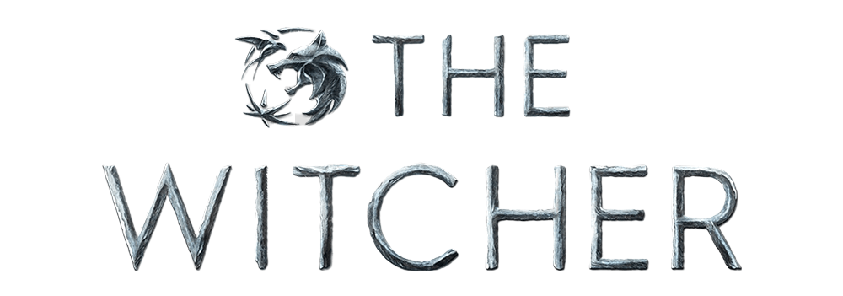

Você já deve ter ouvido falar da exclusiva produção da Netflix lançada em 2019. The witcher é uma série de televisão via streaming estadunidense-polonesa de drama e fantasia, criada por Lauren Schmidt Hissrich,uma grande produtora responsável por escrever roteiros para séries de televisão The West Wing and Justice, também escreveu e produziu programas como Parenthood, Do No Harm, Private Practice, Daredevil, The Defenders e The Umbrella Academy. Uma profissional verdadeiramente de peso.Voltando à serie, a mesma foi baseada na série de livros do escritor polonês Andrzej Sapkowski sendo dirigida em toda a sua produção por Tomasz Bagiński Alik Sakharov. E pode apostar a série faz com que o leitor seja cativado a cada episódio com uma trama sensacional, fazendo com que seja inevitável ir para o próximo episódio.